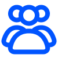

Abandoned goals within 2 weeks
🎯
9 of 12 (75%) users abandoned their goals within 2 weeks
APP LAUNCH · SUMMER 2025
🔍 Launching an AI-powered mobile app that helps users to achieve daily wellness goals

🏆 Selected for the Pre-Startup Package, awarded government funding of 30M KRW
🚀 0-to-1 product launch with AI-powered wellness platform · Increasedcompletion rate from 68% to 89%
Nowadays, people often set ambitious wellness goals but lose motivation along the way. The reason for this is because of the pressure to meet ideal standards amplified by constant social comparison, turns what should be a journey of self-care into a source of stress and discouragement.
Solution is ROL. ROL is a mobile routine app that allows users to build daily routine and achieve wellness goals. ROL helps users to create, track, and maintain habits for healthier and more productive life.
75% of users abandon their wellness goals within 2 weeks due to lack of personalized support and community connection. Current routine apps focus on individual tracking but fail to address the social motivation gap that keeps users engaged long-term.
I was responsible for 0 to 1 product design and launch, including design planning, content strategy, design system, prototyping, app store screenshot creation, social media marketing, and leading the app launch with iterative testing and QA.
Before designing ROL, we wanted to understand user's emotional and behavioral patterns behind maintaining daily golas, especially what factors make them discouraged or motivated.
We interviewed 12 potential stakeholders (6M and 6F), while focusing on understanding how often participants set daily goals, what types of goals they usually set, and how frequently they felt discouraged when trying to achieve them, as well as genral questions about their daily life.


Through the user interview, our team was able to understand the reason why participants are discouraged to achieve their goals, even though they have solid plans when they first plan it.
Findings revealed that 75% of users failed to achieve their goals within 2 weeks, primarily due to current routine planning apps lacking social connection features and personalization.9 of 12 (75%) users abandoned their goals within 2 weeks
Users expressed a need for more connection with other users to maintain their motivation
Users wanted to plan personalized goals in detail, rather than conforming their goals into social norms
Understanding the user pain points led us to the design question:
Before designing ROL, we performed a competitive analysis to discover unique features that could set ROL apart in the wellness mobile app market.

 Routinary
Routinary
 Challangers
Challangers
 Habtify
Habtify
 Habitica
Habitica
 My Routine
My Routine
So, what can make ROL differenciate?
After finishing the competitive analysis, our team came up with the three key features that that can differenciate ROL; AI feature, community, and global conection.
Accurately identify the wellness that fits user's body and mind, recommend the most relevant content, and deliver it in a clear, easy-to-digest summary
A comfortable space not overwhelmed by mixed information and promotions, but deeply relatable content and meaningful connections
Not just simple connections, but a link across time and space — a single, ever-evolving space that stays active even while users are in different time zone
Establishing a design system in early stage was important, since I thought a well-defined and consistent system will result in minimizing the communication gaps between developers during the development process.
I chose Noto Sans, which is a global font collection that has modern vibe (Google Fonts), that matches the app's goal to reach out and connect people around the world.
For the color scheme, I chose blue as the primary color as the competitor analysis showed most wellness apps use warm tones, creating differentiation opportunity.

01
I worked on designing the splash image and sign-up flow. In the sign-up process, users agree to the terms and conditions, then provide personal information to complete account creation.

02
From the home page, users can tap the + button in the bottom right corner to add a new routine. In this page, users can input the routine name, select a list and category, set notifications, and attach images and descriptions.

03
My Room serves as an community that encourages users to share their wellness activities and build strong connections.
Within My Room, users can explore other users' profiles to discover which rooms they belong to, which routines they follow and like, and what posts they have created.
Additionally, choosing a room type helps users build meaningful connections with others on similar journeys.

04
Rolly (ROL AI) is an AI-driven wellness platform that transforms user input into personalized routines and communities. By leveraging large-scale wellness and biobank datasets, Rolly interprets users’ concerns and generates wellness insights. These insights are then translated into actionable routines, where users can share activities, join supportive communities, and sustain long-term motivation.
After studying the interaction patterns of other LLMs, I designed the conversation page to facilitate seamless user interaction with Rolly.

05
The payment page allows users to subscribe to a VIP pass, which unlocks unlimited routines and exclusive access to VIP rooms.

1. By defining a consistent design system during the early stage of the project, we established shared visual and interaction guidelines that streamlined communication between designers and developers. This not only ensured design consistency across screens but also enabled developers to implement components more efficiently, reducing rework and development time. Also it allowed team to launch MVP 2 weeks ahead of schedule.
2. Through user test conducted using Figma prototype, allowed our team to find the errors and improvements during the iteration and QA process. By conducting multiple rounds of user testing, we were able to achieve a 100% task completion in usability testing (n=12).
3. Assisted project manager to recieve Pre-Startup Package, which guaranteed 30M KRW government funding.
· Collaborating with front and backend developers and project manager, I learned that effective communication influences the speed of design implementation especially for the early stage start-up, and during that stage, cross functional feedback is essential.
· In an early-stage startup marked by rapid decision execution and high autonomy, I learned to manage ambiguity and uncertainty effectively.
· The experience of refelcting iteration during the iteration process gave me a lesson of how I should priortize feedback.